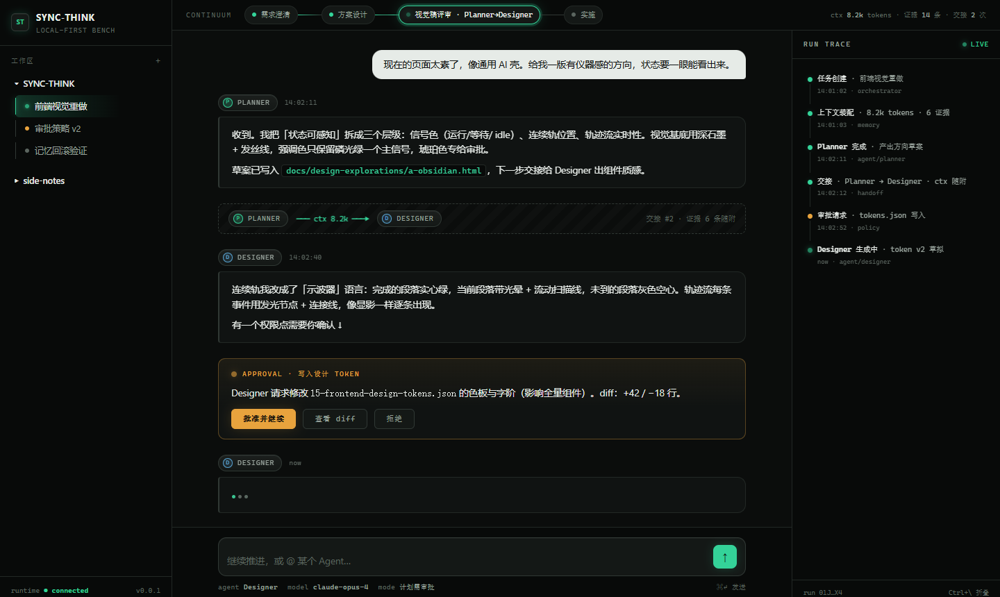
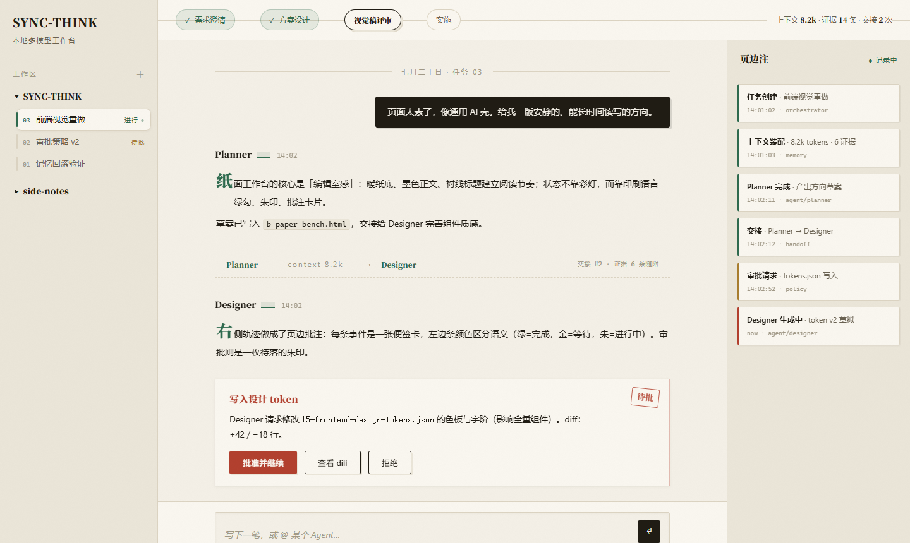
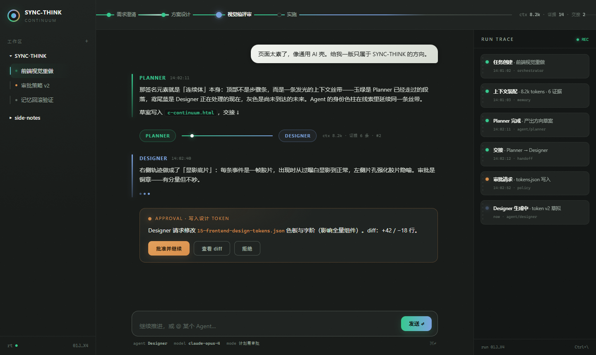
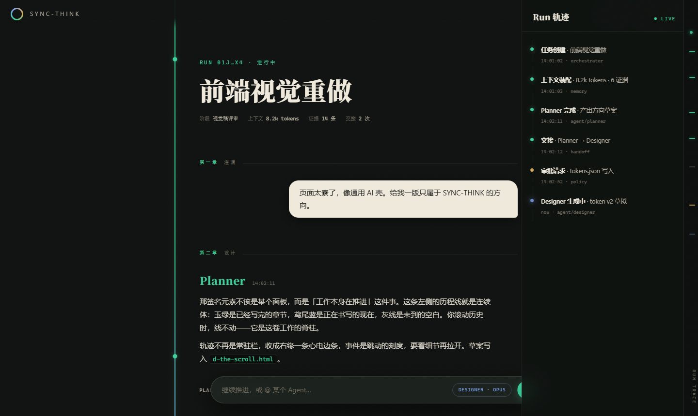

A / B / C 三版保留 Locked IA（左任务树 / 中对话 / 右可折叠轨迹），仅视觉语言不同。D 是零参照原创，直接推翻三栏 IA。点击进入全屏稿（内含动效与可交互元素，建议用浏览器实际打开感受）。

深石墨底 + 发丝线 + 磷光绿信号，等宽字体仪表感。状态靠「发光信号」传达，信息密度最高，最像专业开发者工具。

暖纸底 + 墨色 + 衬线标题的编辑室语言。审批是朱印、轨迹是页边批注。气质安静独特，适合长时间读写，但工具感最弱。

按设计文档 §0.3 推进：顶部一条发光的「上下文丝带」，Agent 交接是丝带上的光点传递，轨迹是显影底片。最贴合产品概念、记忆点最强。

不参考现有前端：砍掉永久三栏，整个应用是一轴居中的工作叙事长卷。连续体化作左侧「历程线」，Run 轨迹收成右缘 24px「心电边条」（点击拉出抽屉），任务导航收进 ⌘K 浮层，审批是横跨长卷的闸门。可交互：点右缘边条、按 Ctrl/⌘+K。
三版也可以混搭：例如 C 的丝带签名 + A 的高密度轨迹。选定方向后，实施路径为：tokens.json v2 → ui-kit 组件逐个重设计（可引入 Tailwind）→ 调试面板收进开发者模式。